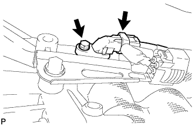
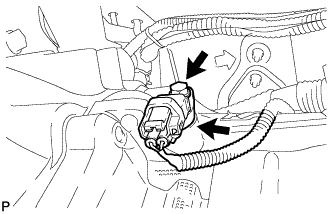

SPEED SENSOR > INSTALLATION |
| 1. INSTALL SPEED SENSOR SP2 |
 |
Coat a new O-ring with ATF and install it to the sensor.
Install the sensor with the bolt.
Connect the sensor connector.
| 2. INSTALL SPEED SENSOR NT |
 |
Coat a new O-ring with ATF and install it to the sensor.
Install the sensor with the bolt.
Connect the sensor connector.